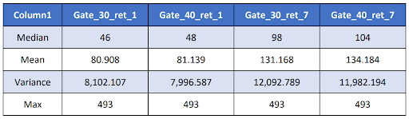

|
|
Siamak KamanAbroo
Python Developer
After several years of working in the field of sales and video production, I realized how much
interested in data and data analysis. So I decided to change and by taking different courses,
learned how to work with data and curiously continue to learn every day.
I am eagerly looking for an opportunity to take a job in this field and I am sure that I can apply
the skills I have learned in the shortest possible time.
|
RELEVANT WORK EXPERIENCE
Udemy
2023
Advanced SQL MySQL Data Analysis & Business Intelligence course
playing the role of a newly hired Database Analyst for Maven Fuzzy Factory, an eCommerce
start-up, and working directly with the CEO, Marketing Director, and Website Manager to help
grow the business and analyze performance along the way.
- Analyzing traffic sources and bid optimization & trend analysis.
- Analyzing Website Performance
- Building conversion funnels and testing conversion paths.
- Analysis for channel portfolio management.
- Analyzing business patterns and seasonality.
- Product analysis.
- User analysis.
Ima VOD
2023
Freelance Data Scraper
- Web_data crawling for about 3000 Iranian and foreign movies
- Use Beautifulsoup and request libraries for parsing IMDB.com HTML
- Use Selenium Auto WebDriver for Iranian movie data in FIlimo.com.
- Use Python code to find search link patterns for IMDB.com, Filimo.com, and
youtube.com.
- Cleaning the data.
- Creating DataFrame.
- Project Code: Github
Rahnema College
2023
Data Analyst Intern
Pass Data Analyst intern course at Rahnema College and did a final project by using
Phyton to perform an A/B test for a hypothetical game to determine the effect of moving
a challenge stage on player retention.
- Cleaning the Dataset and replacing missing values.
- Finding stats of Dataset.

.png)
- Set null hypothesis.
- Find z-critical and p-value
- Perform A/B test.
- All codes and results: Github
Skills
Technical Skills
| SQL |
★★★★☆ |
| Python |
★★★★☆ |
| Excel |
★★★★☆ |
| Pwer BI |
★★☆☆☆ |
| Data Visualization |
★★★★☆ |
| Pandas, Numpy, Matplotlib |
★★★★☆ |
| GIT |
★★★☆☆ |
|
Soft Skills
| Critical Thinking |
★★★★☆ |
| Communication |
★★★★★ |
| Creativity |
★★★★☆ |
| Time-Managment |
★★★★★ |
| Collaboration |
★★★★★ |
| Emotional Intelligence |
★★★★☆ |
| Attentive |
★★★★☆ |
|
Education
- Master’s Degree in Mechanical Engineering, Azad Tehran South Branch, 2010
- Bachelor’s Degree in Machine Tools, College of Engineering, 2007